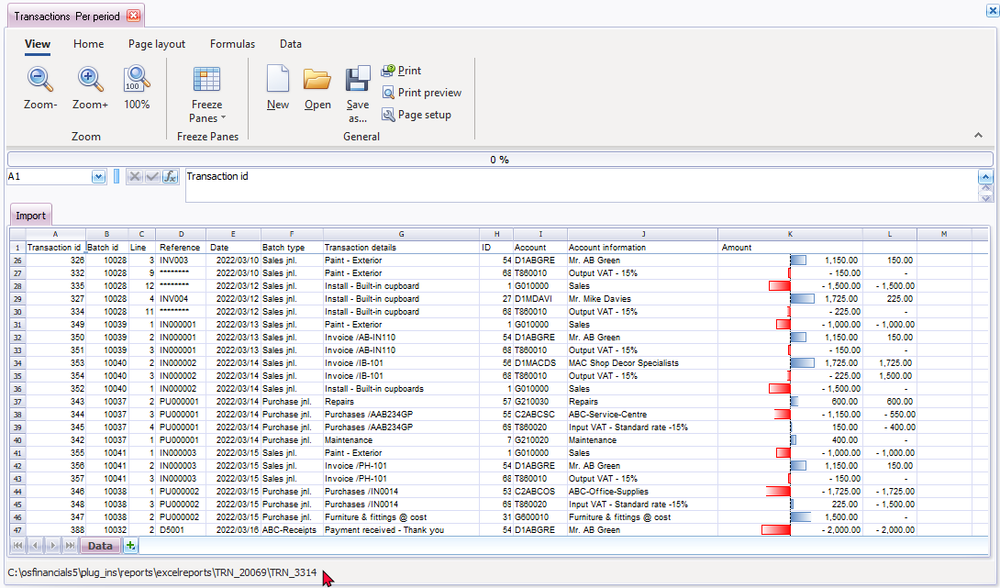

Spreadsheet - Transactions per period
You may import the transactions in batches and documents (i.e. sales documents (Invoices and Credit notes) and Purchase documents (Purchases and Supplier returns)), which have been posted (updated) to the ledger, for a selected period.
|
|
This report only includes batch and document transactions which are posted. Unposted batches and documents will be NOT be included in this report. To view a list of unposted batches and documents, which is not updated to the ledger, go to Input → Checking unposted items (Default ribbon). |

To import posted transactions into a spreadsheet:
- On the Reports ribbon, select Spreadsheet reports → Transactions → Per period.
- On the parameters ("params")" screen, Select the period or date(s) and click OK. The transactions for the selected period or dates will will be listed in the spreadsheet:

This spreadsheet will list the transaction details in the following columns:
- A - Transaction id - The ID of the transaction which was automatically created when the batch or the document was posted (updated) to the ledger.
- B - Batch id - The ID of the batch which was automatically created when the batch or the document was posted (updated) to the ledger.
- C - Line - The line number for each transaction in a batch or transaction generated in documents.
- D - Reference - In the case of batch transactions, the reference as entered for each transaction in the "Reference" column in “Batch entry” screens will be displayed. Balancing transactions in batches will be displayed with eight (8) asterisks (e.g. "********").
In the case of documents, the document number for Invoices, Credit notes, Purchases and Supplier returns will be listed.
- E - Date - The date of the transaction. The date as entered in the "Date" column of "Batch entry" screens. In the case of documents, it will display the date on which a document was generated.
- F - Batch type - In the case of batch transactions, the name of the Batch type will be displayed. No aliases will be displayed as entered on each “Batch entry” screen.
In the case of documents, it will display the name of the Batch type as linked to each document type in the Setup → Documents setup screen for each document type.
- G - Transaction details - The description of the transaction as entered in the "Description" column of batches. In the case of documents, it is the document type description (i.e. Invoice, Credit note, Purchase or Supplier returns) and the reference number (as entered in the "Your reference" field of documents.
- H - ID - The ID of the account applicable to each transaction.
- I - Account - The Account code or number applicable to each transaction.
|
|
Prefixed character in the account code indicates the account type: G = General ledger B = Bank account C= Creditor D = Debtor T = Tax |

- J - Account information - The name (description) of the account applicable to the transaction.
- K - Amount - The amount of the transaction. If Tax (VAT/GST/Sales tax) is applicable to a transaction, three (3) transactions should be listed:
- Tax inclusive – The full amount of the transaction, including Tax.
- Tax exclusive – The amount of the transaction, excluding Tax.
- Tax amount – Only the tax amount applicable to the transaction.
- L - The cumulative amounts for each transaction. After taking the contra accounts into consideration, the cumulative total for each transaction, should reflect zero.